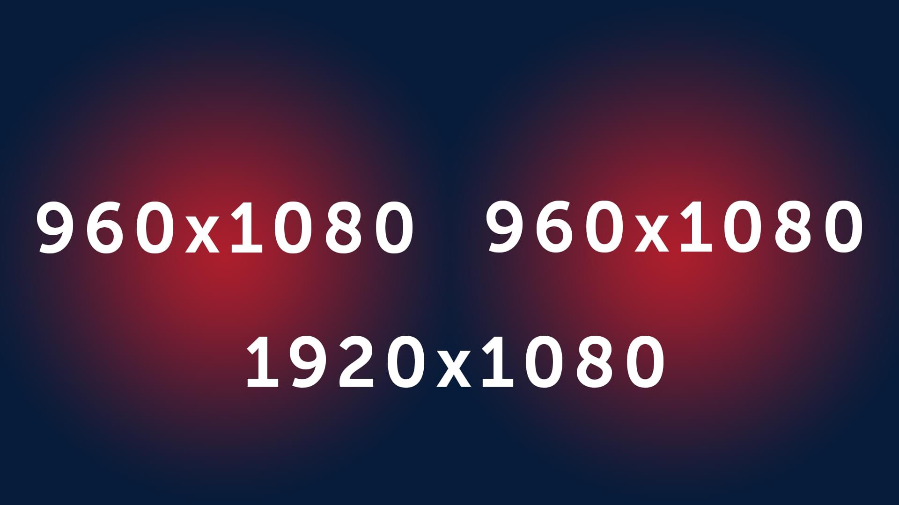
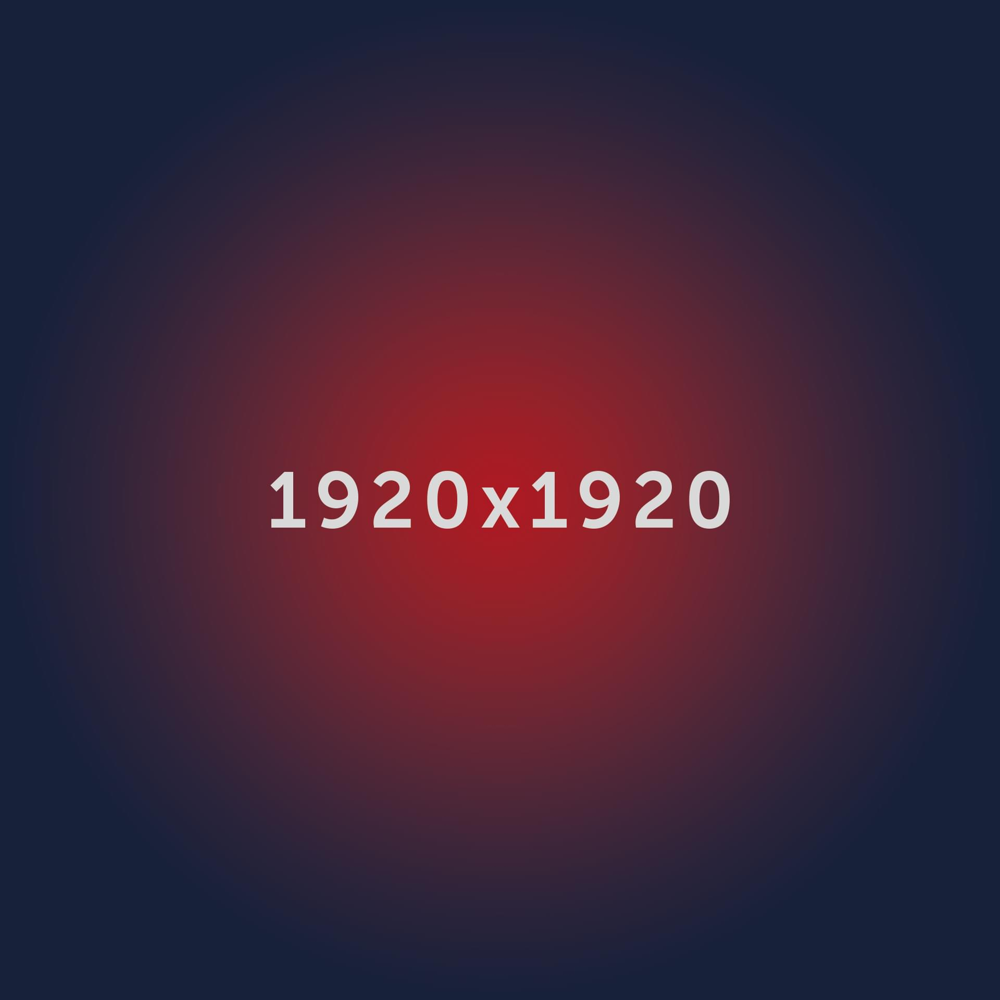

Akcesoria
Dostosuj akcesoria w pakiecie
Twoja obecna gwarancja wynosi: XY lat
Pakiet Prestige
Wybierając ten pakiet, zyskujesz:
- Dodatkowe 10 lat gwarancji na dach
- Niepowtarzalne dedykowane obróbki
- Najwyższa jakoś produktów
- Najlepsze techniczne rozwiązania
Akcesoria będące w pakiecie
System Modułowych Obróbek Dachowych MOD
-
 Pas podrynnowy PP 150, PP 180, PP 220 -
Pas podrynnowy PP 150, PP 180, PP 220 -
Pas podrynnowy PP 150, PP 180, PP 220 -
Pas podrynnowy PP 150, PP 180, PP 220 -
Pas podrynnowy PP 150, PP 180, PP 220 -
Pas podrynnowy PP 150, PP 180, PP 220 -
Pas podrynnowy PP 150, PP 180, PP 220
Obróbki dedykowane
-
 Pas podrynnowy PP 150, PP 180, PP 220 -
Pas podrynnowy PP 150, PP 180, PP 220 -
Pas podrynnowy PP 150, PP 180, PP 220 -
Pas podrynnowy PP 150, PP 180, PP 220